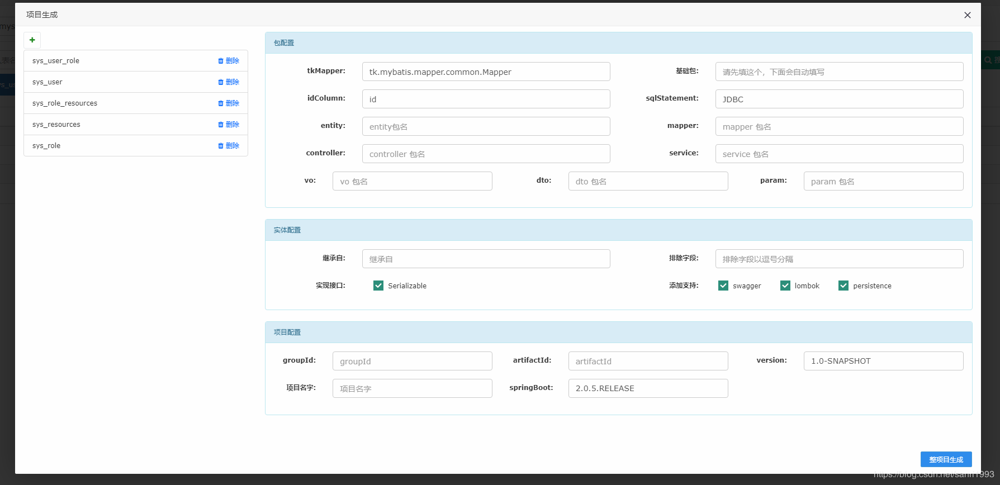

我的工具箱 sanri-tools 现在可以一键生成项目了，你只需要一个配置项，即可自动生成单表增、删，改，单记录查询，条件查询，分页查询。而且最重要的，生成的项目可以直接运行
内部的生成工具为：数据表工具，应该在首页就可以看到
我取名为内容服务，这些接口全部在一个 controller 和 service 中，配合我的 web-ui 项目，使用 springboot 快速开发，项目下载下来后可以直接运行起来，并且带了各数据表的一些接口
用处：可以做为二次开发的初始项目，只需要添加业务内容即可，对于接私活来说使用起来会很方便。你还可以整全我的导出组件 ，来增强项目的功能，后面我会开发出其它的组件来丰富其功能
愿做项目就像搭积木一样，以后再也不做程序员
使用截图
你只需要在基础包填写内容，会取你最后一个包名做项目名和 artifactId ，当然你也可以自己修改。

创作不易，希望可以支持下我的开源软件，及我的小工具，欢迎来 gitee 点星，fork ，提 bug 。
Excel 通用导入导出，支持 Excel 公式
博客地址：https://blog.csdn.net/sanri1993/article/details/100601578
gitee：https://gitee.com/sanri/sanri-excel-poi
使用模板代码 ，从数据库生成代码 ，及一些项目中经常可以用到的小工具
博客地址：https://blog.csdn.net/sanri1993/article/details/98664034
gitee：https://gitee.com/sanri/sanri-tools-maven